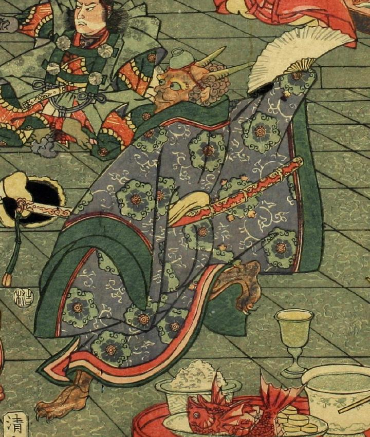

2本の角をもつ、巻き髪の鬼。頭に伏せた器をくくりつけ、右手にもった白い扇をかかげて踊っている。紫の地に六角形の模様の入った着物を身につけ、腰には豪華な鞘におさまった刀を差している。長い爪の生えた足の一方を後ろにあげている。
著作者：一栄斎芳艶（歌川芳艶）／出典：親書誌：U426_nichibunken_0086：丹波國大江山之圖；タンバノクニオオエヤマノズ／日付：2007／資源識別子：U426_nichibunken_0086_0005_0001
Copyright (c)2010- International Research Center for Japanese Studies, Kyoto, Japan. All rights reserved.